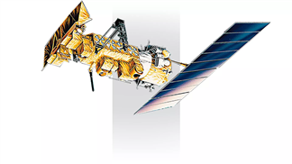
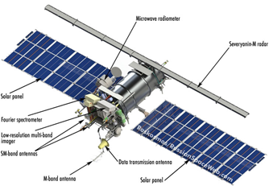
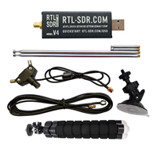

With relatively inexpensive equipment, you can capture live satellite images of the weather from orbit. The two easiest transmissions to receive are using the APT and LRPT protocols

LRPT reception using SDR
With relatively inexpensive equipment, you can capture live satellite images of the weather from orbit. The two easiest transmissions to receive are using the APT and LRPT protocols
APT
APT (Automatic Picture Transmission) is an analog picture transmission format used on weather satellites. It uses the same FM modulation as FM radio and the images are transmitted line by line. The satellites currently transmitting in this protocol are from the NOAA POES constellation. And only 3 out of 16 are still in use. - NOAA 15, NOAA 18 and NOAA 19. APT provides a resolution of 4 km/pixel.
LRPT
LRPT (Low-Rate Picture Transmission) is a digital signal, which makes decoding a bit more difficult, but it also provides error correction, which results in much better image quality. The only two satellites currently using the LRPT protocol are METEOR-M No. 2 and METEOR-M No. 3. LRPT provides a higher resolution of 1 km per pixel.
NOAA
METEOR-M
Hardware
SDR
Basically any SDR will do the job. I would recommend Nooelec SMArTee, RTL-SDR or Airspy mini. I use RTL-SDR, but do your own research.
Antenna
If you just want to try to receive and image and then put the SDR on a shelf, you can use a simple V-dipole antenna that comes with the RTL-SDR starter kit or build one yourself. If you want to make a permanent station, you will want to build a QFH antenna. If you have a 3D printer and the RTL-SDR antenna, you may want to 3D print this antena angle bracket. If you want to build your own V-dipole antenna you can use this guide.
Laptop
If it can run modern linux / win 7, it will be enough. I use Thinkpad X200 from 2008 with Core2Duo runnin Linux.
Software
The only software you need for the whole process of capturing and decoding the images is SatDump – an amazing opensource project
Pass Prediction
For predicting when the next satelite is gonna pass above your location I would recommend using Look4Sat if you have an android phone or Gpredict * on your PC. If you use iOS good luck.

Using SatDump
After opening SatDump open the Recorder tab, select your SDR in the Device panel and press Start. In the Processing panel, search for LRPT or APT, depending on which satellite you are trying to capture. For NOAA APT: select the correct NOAA satellite and frequency. For Meteor LRPT: select METEOR-M2-x LRPT 72k and primary frequency. Press Start and the frequency in the waterfall should adjust.
Receiving the image
When the satellite signal comes in line with the antenna, you should see the signal appear on the waterfall. You should hear a beep when the APT signal comes in. You can try to adjust the antenna by hand to get a better signal and if you see LOCKED it means you are receiving a picture. If the signal goes low for a moment, you will see black lines/grains where the signal was bad. After the satellite pass, press Stop in the Processing tab and the Device tab. Now Satdump will start processing the received data.
PLACEHOLDER IMAGE
The Results
Received images are stored in the Live Processing directory
You can also use the Viever tab to create image composites, add map overlays, etc.